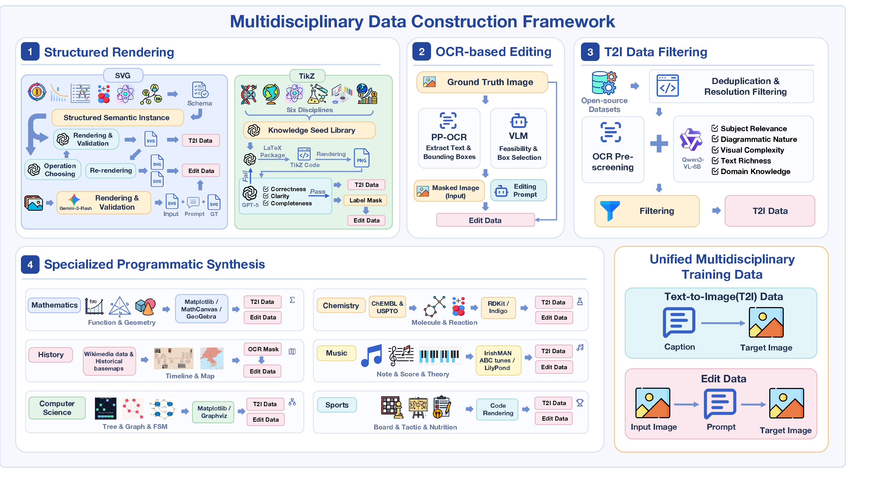
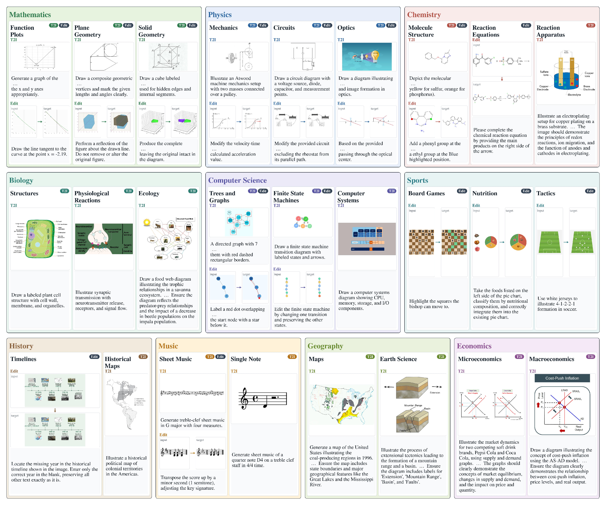
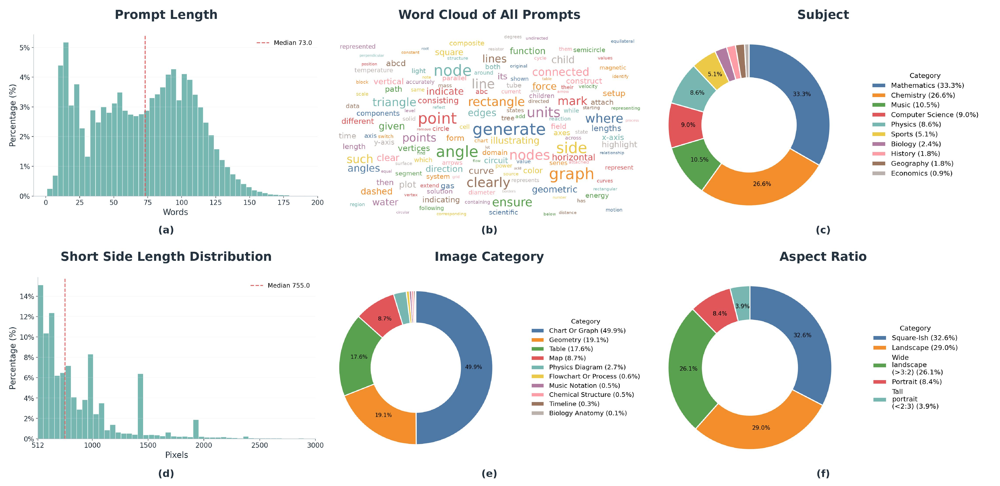
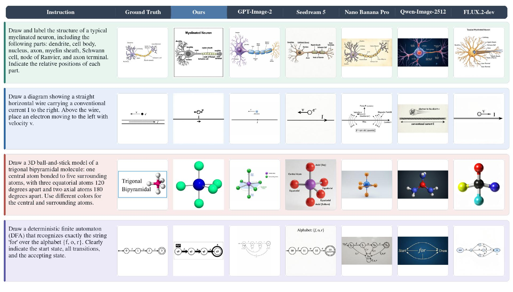

Recent image generation and editing models can produce visually appealing natural images, yet they remain unreliable when the target image is a knowledge-intensive diagram whose correctness depends on disciplinary concepts, symbolic structure, and precise spatial relations. We introduce DisciplineGen-1M, a million-scale multidisciplinary dataset that supports text-to-image generation and image editing. It contains 1.2M samples spanning mathematics, physics, chemistry, biology, geography, computer science, economics, history, music, and sports. To construct the dataset, we design a scalable framework that combines vector-graphics rendering, OCR-based editing, curated programmatic synthesis, and large-scale text-to-image filtering. These pipelines produce captions, editing instructions, structured annotations, and paired images with controllable semantic differences. Building on DisciplineGen-1M, we further introduce a discipline-informed reasoning-generation model for both text-to-image generation and image editing. Experiments on discipline-related benchmarks, GenExam and GRADE, show substantial improvements over open-source baselines, while evaluations on general reasoning-informed benchmarks, WISE and RISE, further indicate broader transfer. The results suggest that large-scale structured academic visual data is a key ingredient for moving image generation from aesthetic plausibility toward verifiable knowledge-grounded visual creation. We will publicly release our dataset, model, and source code of the data curation pipeline to ensure reproducibility and benefit future research.

Overview of the DisciplineGen-1M construction framework. We combine four complementary methods to produce T2I and editing data: structured rendering with SVG/TikZ, OCR-based editing, large-scale T2I filtering, and specialized programmatic synthesis.

Representative examples from DisciplineGen-1M. The multidisciplinary data span over ten subjects and their fine-grained subdomains.

Statistics of DisciplineGen-1M. The dataset contains long and information-dense prompts, diverse subject coverage, multiple image categories, and varied resolutions and aspect ratios.

Qualitative examples of images generated by our model and baselines on GenExam.